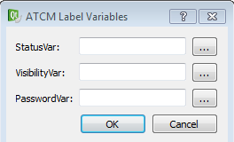

Per usare il bottone per fare un cambio di stato di una variabile di tipo toggle seguire i seguenti passi:
Trascinare l'oggetto sulla pagina.
Fare un doppio click sul bottone.

Definire la variabile di stato StatusVar con il nome della variabile della Crosstable che si vuole usare per cambiare il valore a seconda dello stato del bottone. Premere il bottone “…” per selezionare la variabile desiderata.
NOTA: se si vuole cambiare lo stato solo fino a che il bottone è premuto, verificare che l'opzione checkable NON SIA vistata; se si vuole cambiare lo stato fino alla prossima pressione del bottone, verificare che l'opzione checkable nella sezione QAbstractButton SIA vistata.
NOTA: se da PLC cambio il valore della variabile di riferimento, il bottone assumerà lo stato della variabile stessa. Se la variabile sarà forzata a 1 allora il bottone risulterà premuto ed eseguirà l'eventuale operazione associata. Se la variabile sarà forzata a 0 allora il bottone risulterà rilasciato.